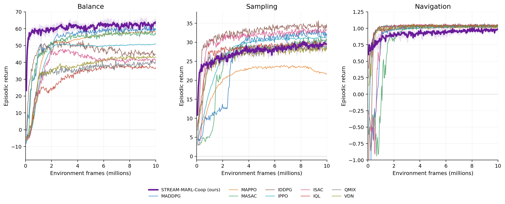

Reinforcement learning 2026
STREAM-MARL
A streaming multi-agent learner designed to update from each transition once and then discard it.
- My contribution
- Co-developed the replay-free actor-critic method, its training procedure, and its evaluation.
- Result
- One use per transition; 210.6 MiB peak memory in the reported comparison.
The question
Many multi-agent reinforcement learning methods rely on storing and revisiting experience. We asked what learning could look like when memory and transition reuse are real constraints.
The approach
I co-developed a centralized-training, decentralized-execution actor-critic that processes each transition once, updates immediately, and discards it. The method combines eligibility traces, online normalization, and entropy-based exploration so that the constraint is part of the learning design.
What we observed


In one reported comparison, STREAM-MARL used 210.6 MiB of peak resident memory. The public research abstract also reports reaching a high-success navigation threshold about four times sooner than MAPPO and IPPO in its evaluated setting. Those numbers describe specific experiments, not general guarantees.
The broader question still interests me: what becomes possible when we treat practical limits as part of the research problem?